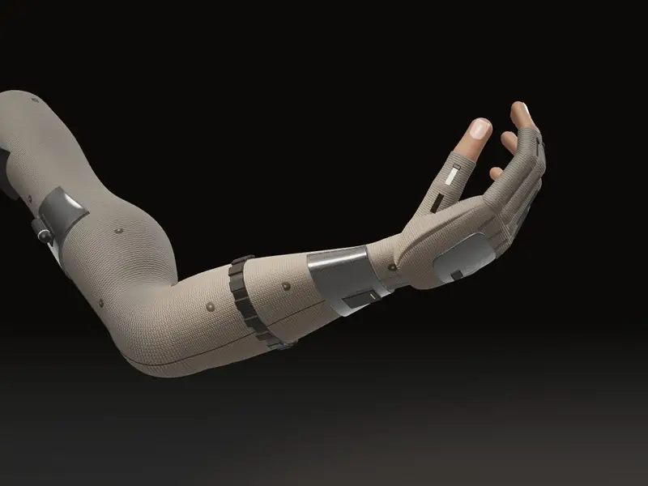
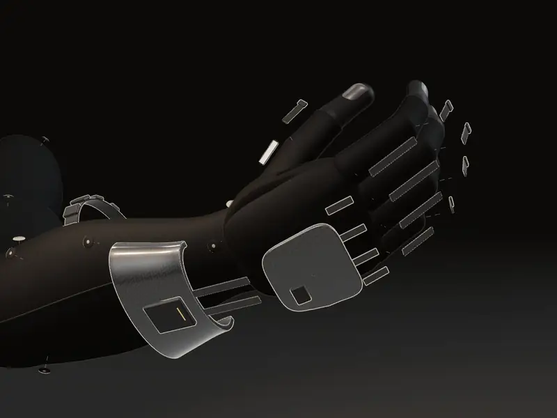
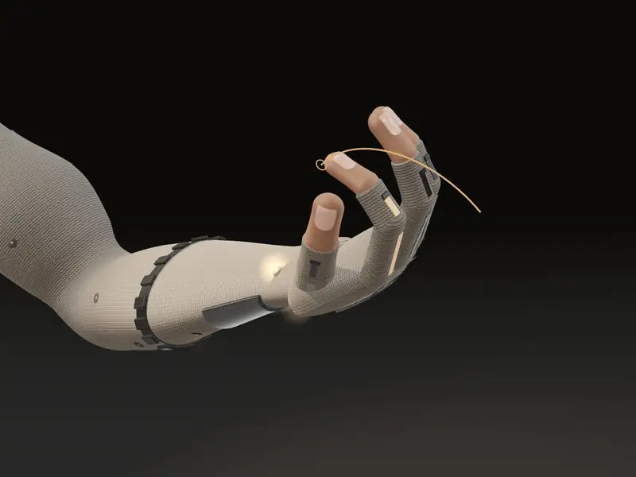
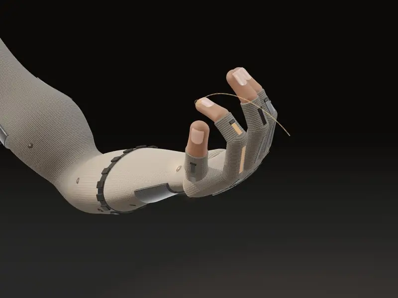
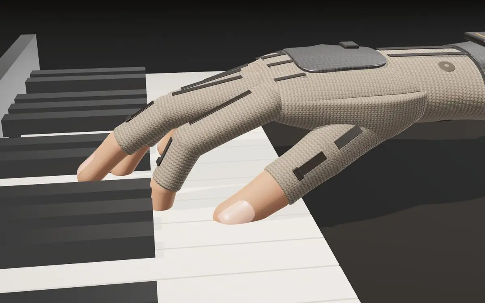
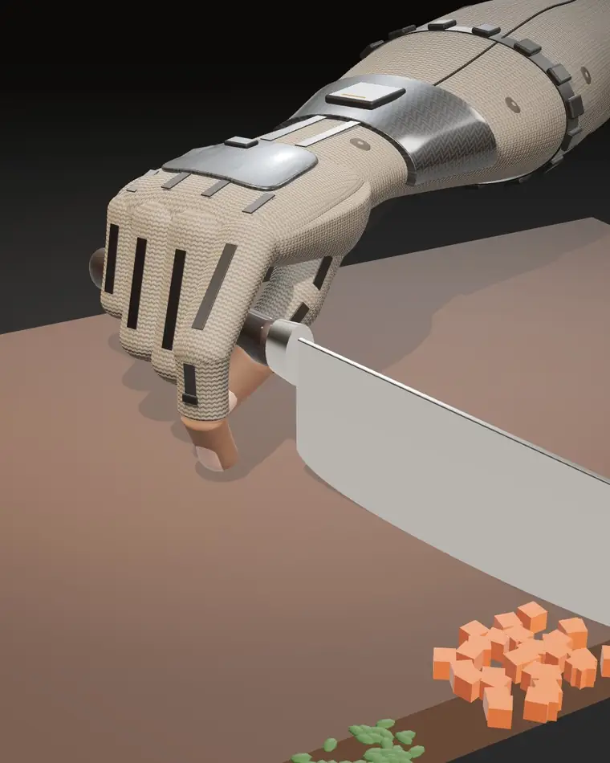
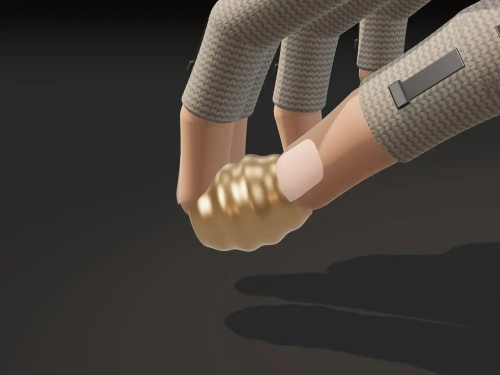

AI just gota body.Yours.
Abilith is pioneering somatic computing: superhuman ability, for everyone.
Concept visualizationEarly development. Not working hardware.Hermes / Somatic computing / Concept
The problem
Knowledge scales. Skill never has.
We can print a book a billion times. We've never been able to copy a surgeon's hands even once.
- Work1.9M
US manufacturing jobs that could go unfilled between 2024 and 2033.
The Manufacturing Institute and Deloitte, 2024 - Medicine850
Operations a general surgeon needs, after at least five years of residency, to qualify for board certification.
American Board of Surgery - Learning90%
Of first-time guitar players quit within a year, according to Fender's CEO.
CNBC, 2020
Physical skill still passes from person to person through years of practice side by side. Video, coaching apps and VR can show you what to do. None of them can put the movement into your body. That step, from seeing to doing, is the one somatic computing is built for.
Somatic computing
AI that works through the body.
The name comes from the somatic nervous system, the part of us that controls voluntary movement, and from soma, the Greek word for body. A somatic computer does three things.
- 01
Senses
What you're doing and what you're looking at: your joints and muscles through the sleeve, the task in front of you through camera smart glasses.
- 02
Understands
How your movement compares with the way an expert would do it. We call this somatic intelligence.
- 03
Acts
With light, limited guidance on a movement you've started: cues that show where and when to move, and brakes that steady a joint or stop it at the right point.
The fast part of the loop, from sensing to a cue or a brake, runs on two small chips in the sleeve. It is designed to close in an estimated 25 to 60 ms, inside the roughly 80 ms in which a guided movement still feels like your own.
The models run on the glasses and your phone, which send short targets to the sleeve. Camera smart glasses add what the arm alone can't know: the object in your hand and the task in front of you.
Hermes
Human ability, extended.
Our first somatic computer is a knit sleeve that runs from the fingertips to the shoulder and pairs with camera smart glasses. It's designed to weigh about half a kilogram. Scroll through it in four states, and scroll back to reverse.
Concept renders of a proposed design
Sense
Fit
Guide
Learn
Yarn sensors in the glove read each finger joint. A 16-channel EMG band reads intent and effort at the forearm, and four motion sensors follow the hand, forearm, upper arm and shoulder.Sensing locations only. No live data.
One knit sleeve, with carbon only where the brakes need something stiff to push against. The battery and radio sit at the shoulder, so only about 90 to 130 g is past the wrist.Exploded along the axis each part mounts on. Weights are design targets.
Vibration cues show where and when to move, and brakes about a millimeter thick stop the finger where the expert's would. Cues and brakes can't move you. They shape the movement you start.Illustrative fingertip path.
Practice with help that fades. Hermes starts with full guidance and gives less as your errors drop, until the movement is yours.Guidance levels are illustrative.
Concept visualizationEarly development

01 / 04Sense
Yarn sensors in the glove read each finger joint. A 16-channel EMG band reads intent and effort at the forearm, and four motion sensors follow the hand, forearm, upper arm and shoulder.

02 / 04Fit
One knit sleeve, with carbon only where the brakes need something stiff to push against. The battery and radio sit at the shoulder, so only about 90 to 130 g is past the wrist.

03 / 04Guide
Vibration cues show where and when to move, and brakes about a millimeter thick stop the finger where the expert's would. Cues and brakes can't move you. They shape the movement you start.

04 / 04Learn
Practice with help that fades. Hermes starts with full guidance and gives less as your errors drop, until the movement is yours.
Three modes
Enhance
Makes what you can already do steadier. Brakes resist unwanted motion, and a light grip assist adds holding force.
Guide
Takes you through a movement you haven't learned yet. It shows you the movement without making it for you.
Learn
Practice with help that fades: full guidance at first, less as your errors drop, until you're doing it on your own.
Hermes v1, by zone
One knit sleeve carries the wiring, the electrodes and 12 vibration motors. Weight sits at the shoulder, so the hand carries only thin brakes and sensors.
Hand and fingers
- Five electrostatic finger brakes
- Strain-sensor glove
- Carbon back-of-hand plate
- Hand motion sensor
Wrist and forearm
- Wrist brakes
- 16-channel dry EMG band
- Carbon cuff and motion sensor
- Wrist chip that runs the fast loop
Upper arm and shoulder
- 8 Wh battery, about 36 g
- Shoulder chip and radio
- Carbon upper-arm cuff
- Grip-assist motor, about 10 N
Design targets, not measurements of a finished device: about half a kilogram from fingertips to shoulder, with about 90 to 130 g past the wrist, averaging under a watt.
The skill library
Skill, recorded at its source.
Hermes is the first device. The library of skills is the platform. An expert records a skill by doing what they're best at while wearing Hermes, and is credited by name and paid for it.

Concept renderA pianist's timing
MusicA passage you can hear in your head but can't yet play. Feel how a concert pianist voices it, in your own fingers.

Concept renderA chef's knife work
KitchensFast, even and controlled, from a chef who preps for hundreds of covers a night.

Concept renderAn assembler's precision
WorkHolding a small part still through a fine fit, the kind of skill that takes a technician years to build.
We start with precision hand skills: fine, guided movement of the hand and wrist. It's what Hermes covers best, it's measurable in accuracy, speed and error rate, and it runs from assembly lines to kitchens to music rooms.
How the library grows
- 01
Experts record
The world's best capture how they move, and are paid for it.
- 02
Anyone runs them
People and companies run skills on Hermes. A company can keep its own experts' skills in a private library.
- 03
Sessions make data
How real people move, measured on the arm itself. Wearers choose whether to share it.
- 04
Every skill improves
Shared data improves somatic intelligence, which makes every skill better and draws in more experts and users.
Principles
The human stays in control.
A technology that guides your body has to earn trust. Hermes is built around four commitments.
- 01
You lead
Hermes only adds to movements you start, and one control cuts power and releases every brake.
- 02
You keep the skill
We'll judge Learn by what people can do once the sleeve comes off.
- 03
You own your data
Nothing is shared, with robot makers or anyone else, unless you opt in. We treat it as sensitive neural data.
- 04
Experts are paid
Every skill in the public library comes from an expert who is credited by name and paid to record it.
"You lead" is a property of the hardware, not a software promise. Cues and brakes can't move you, brakes release the moment power is off, and the one part that adds force, a grip assist of about 10 N, is small enough to overpower.
Thesis
Physical AI is at a fork.
One path builds machines that do things for us. The other builds AI that lets us do anything.
Robots should take the heavy, repetitive work. Skilled, varied work is different. There, the intelligence can go into the person instead.
Within the next decade, we believe more people will wear physical AI than will ever live alongside a humanoid robot.
Resources
Read the white paper.
AI just got a body.
Yours.
More ways to be human.
Create more, learn from the best, and do things your body couldn't do yet. You choose the move. AI brings the skill.
If you work on haptics, motor learning, embedded control or smart textiles, we'd like to compare notes. A contact route will be listed here once it is set up.